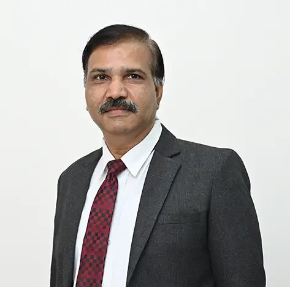

Prof. Sunil Brijlal Somani
Associate Professor

Associate Professor
Dr. Sunil Somani is an Associate Professor and M.Tech. Coordinator in the School of Electronics & Communication Engineering, VLSI & Embedded System Specialization, MITWPU. He received his Bachelor's degree in Electronics Engineering from Marathwada University in 1993, followed by an M.Tech. in Electronics & Telecommunication from Govt. College of Engineering Pune, and a Doctor of Philosophy in Electronics & Communication. Dr. Somani has over 25 years of teaching experience and has served as an Assistant Professor at A C Patil College of Engineering, Navi Mumbai, prior to joining MIT Group of Institutions. He is a Fellow of IETE, Member of IE, Life member of ISTE, and Senior member of IEEE. His research interests lie in the fields of Wireless Communication, Digital Communication, Computer networks, IoT, and Signal processing. He has authored over 42 research papers in international and national-level journals and has reviewed conference papers in the field of communication engineering, Wireless communication, wireless networks, and converging telecom technologies. Dr. Somani has filed and published one patent and a copyright in the VLSI domain. Dr. Somani has supervised over 40 Master's dissertations and 50 undergraduate projects. He has developed and delivered several courses, such as GSM Technology, 3G & 4G wireless communication Technologies, and Wireless Sensor Networks, alongside his regular teaching responsibilities. Additionally, he was appointed Head of Student Affairs in March 2019 to address various issues faced by university students.
Mobile Communication, Wireless Communication, Computer Networks,IoT... Wireless Communication, IOT
Profiles